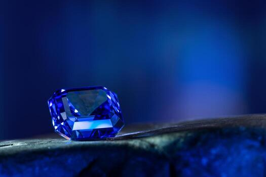

When purchasing a sapphire, one of the most important factors to consider is whether the gemstone is natural and untreated or has undergone heat treatment. Many buyers are surprised to learn that both natural and heated sapphires are genuine sapphires.
A natural untreated sapphire is a gemstone that has not undergone any enhancement process after being mined. Its color, clarity, and appearance are entirely the result of natural geological processes that occurred over millions of years beneath the earth's surface.
Because untreated sapphires are relatively rare, they are often considered more valuable and desirable among collectors and investors.
Heat treatment is the most common enhancement used in the sapphire industry. During this process, gemstones are heated at high temperatures under carefully controlled conditions to improve their color and clarity.
The sapphire remains a natural gemstone that originated in nature. The treatment simply improves characteristics that are already present within the stone.
Natural sapphires are highly valued because of their rarity, originality, and strong investment potential. Many collectors specifically seek untreated gemstones because they represent nature in its purest form.
Heated sapphires often display improved color and clarity while remaining significantly more affordable than untreated stones. This makes them a popular choice for jewelry buyers.
If you are purchasing for investment or collecting purposes, untreated sapphires may be the ideal choice. If your goal is to own a beautiful gemstone at a more affordable price, a heated sapphire may offer excellent value.
Both natural and heated sapphires are genuine gemstones. Understanding the differences between them allows buyers to make informed decisions based on their needs, budget, and preferences.
Why Sri Lankan Sapphires Are World Famous
← Back to Home